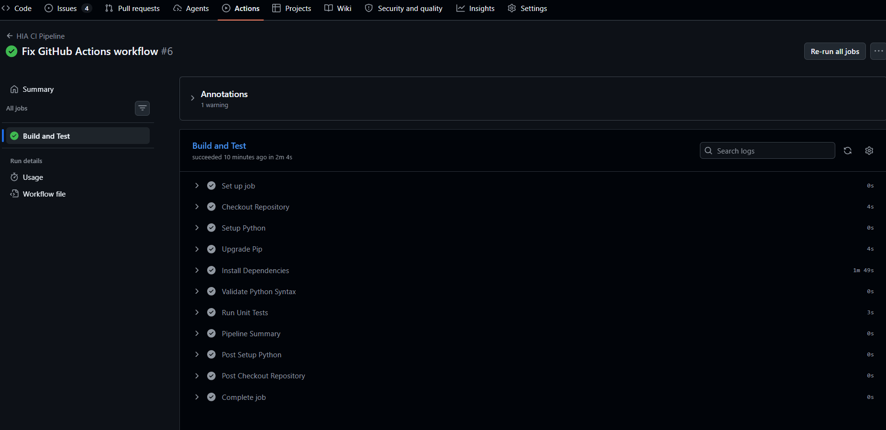
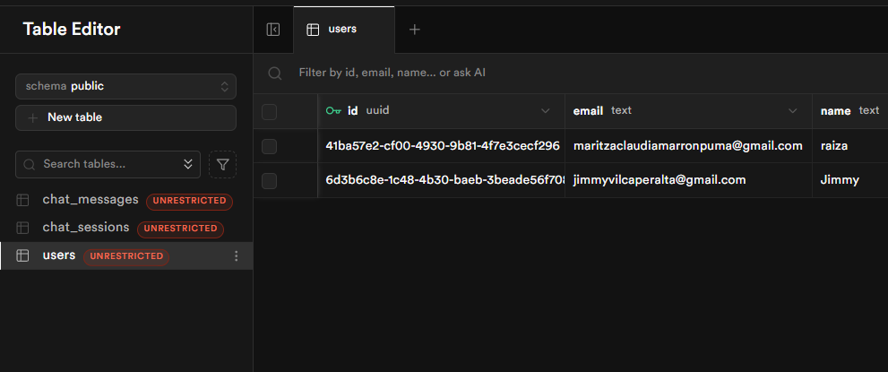
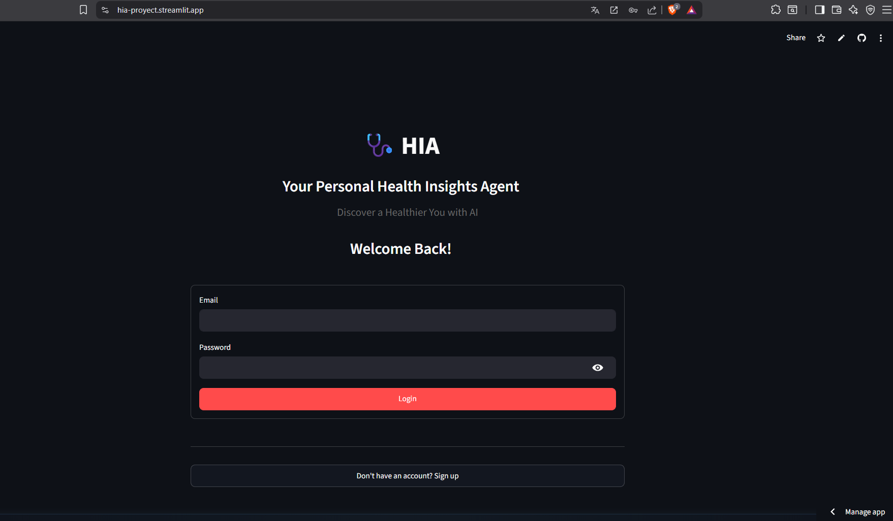
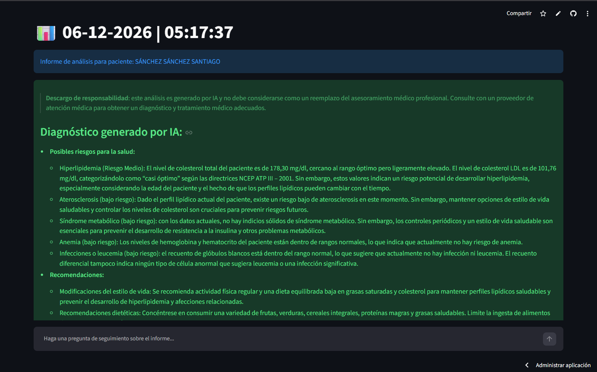
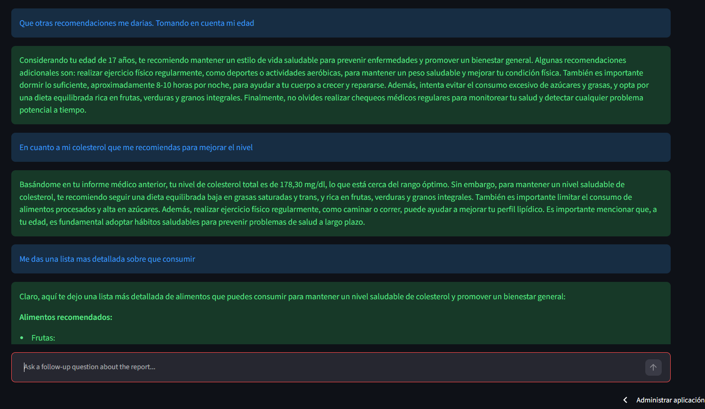
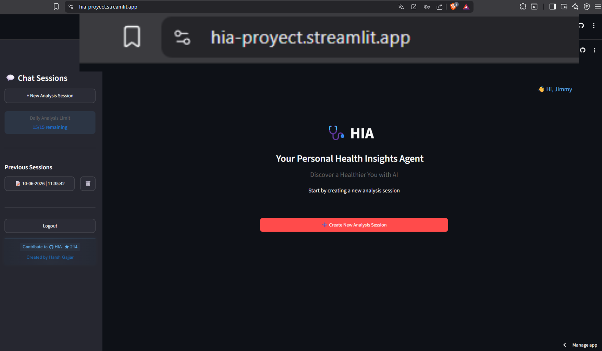
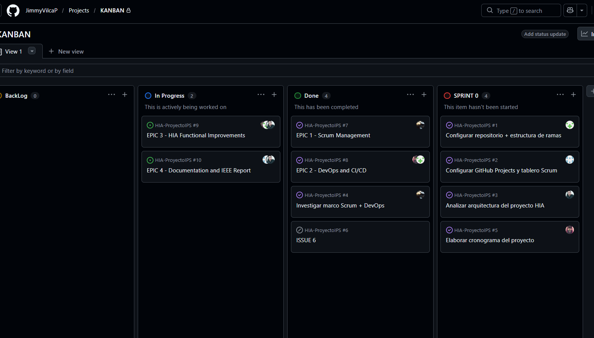
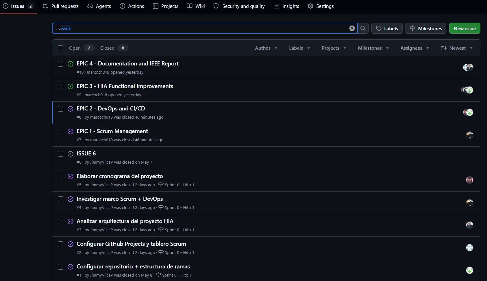
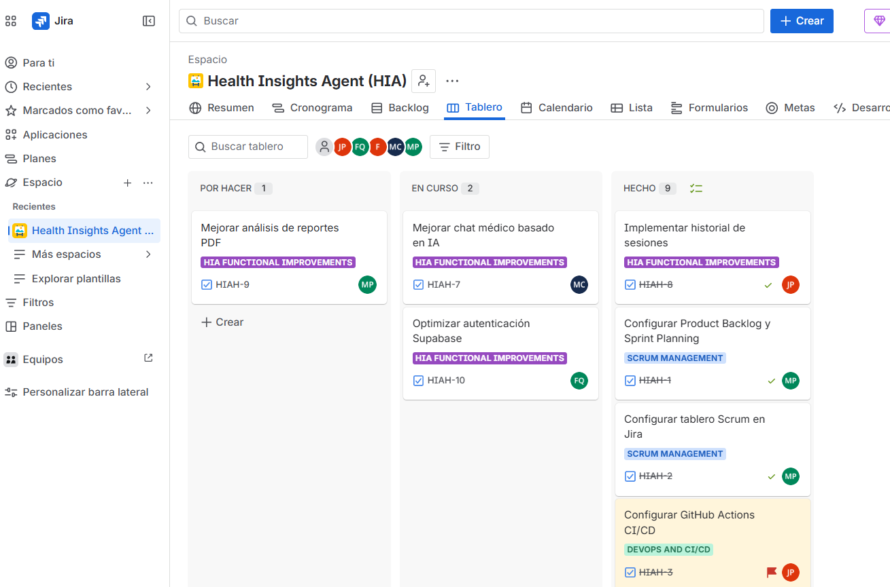
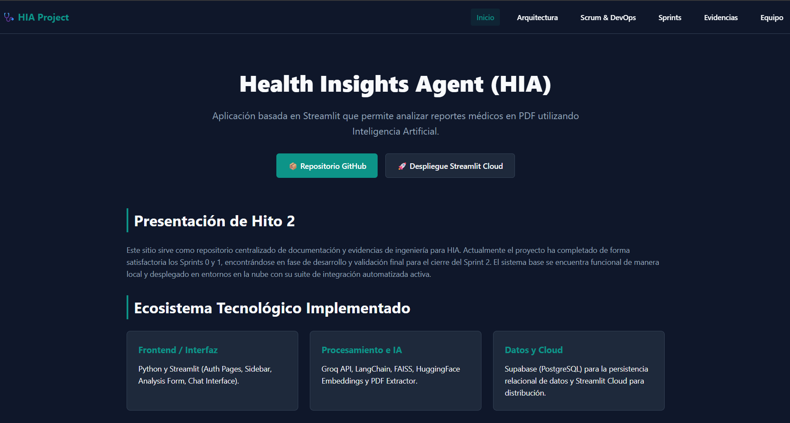

Evidencias del Proyecto
Validación real de componentes técnicos, plataformas e infraestructura desplegada.
Integración Continua (GitHub Actions)

Ejecución exitosa de los flujos de CI/CD en el repositorio.
Persistencia en BD (Supabase)

Tablas y registros almacenados correctamente en la base de datos.
Interfaz de Autenticación (Login)

Pantalla de acceso seguro para los usuarios del sistema.
Procesamiento Clínico (PDF Analysis)

Extracción y análisis de datos desde documentos médicos.
Interacción y Respuestas (Chat IA)

Interfaz conversacional funcionando con los modelos de IA.
Despliegue de Servidores (Streamlit Cloud)

Aplicación HIA desplegada exitosamente y accesible mediante URL pública.
Planificación Ágil (GitHub Projects)

Tablero Kanban para la organización general del proyecto.
Trazabilidad de Tareas (GitHub Issues)

Registro detallado de bugs, features y tareas asignadas.
Gobernanza del Backlog (Jira Board)

Gestión de sprints y control de historias de usuario.
Documentación de Cátedra (GitHub Pages)

Sitio estático generado para documentar la arquitectura y avances.